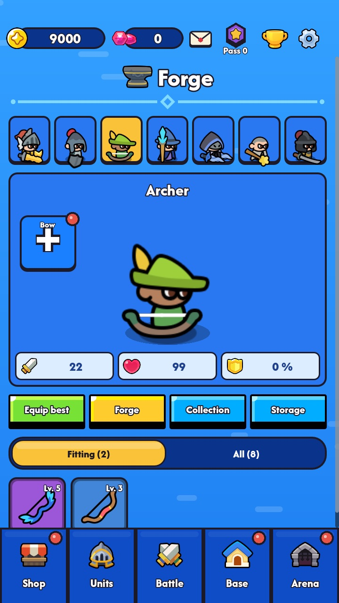
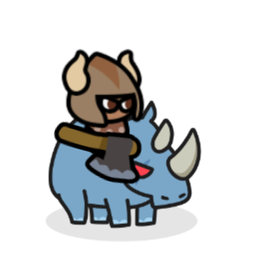
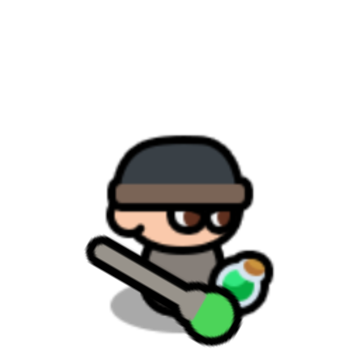
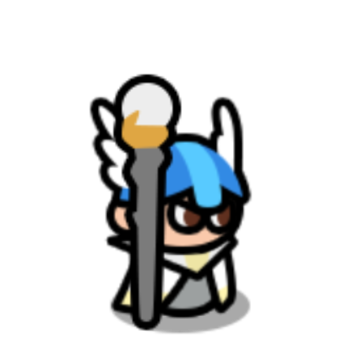

Swarm battles
Waves of goblins, orcs and the undead crash into your army. Hold the line, then break through when the battle frenzy begins and every castle takes extra damage.
Tiny Battle
Build your army, upgrade your heroes and storm the enemy castle. A cute but tactical lane battle game – easy to pick up, hard to master.

Bannerfall is in open testing. Pick your phone, install the beta and tell us what you think – your feedback shapes the game.
iPhone: install Apple’s free TestFlight app first. Android: join the tester group, then open this link, tap “Become a tester” and install from Google Play – please stay in the test for at least 14 days.





Choose up to six units before the battle – tanks up front, archers and mages behind.
Every level-up in battle offers three cards: new units, upgrades, abilities or spells. No two battles play the same.
Hold off the waves, break the enemy line and tear down their castle before yours falls.
Waves of goblins, orcs and the undead crash into your army. Hold the line, then break through when the battle frenzy begins and every castle takes extra damage.
Time your spells: fire rain scorches whole groups, ice rain freezes waves in place, battle blessing drives your troops into a frenzy. Every spell grows stronger with you.
Each battle builds up differently. Do you bring in a new unit, make your samurai stronger or unlock a special ability? Rare epic choices can turn a lost battle around.
Find unit parts in battles and chests, level your units up and ascend them twice – they visibly transform and learn new abilities. From common to mythic, every unit plays differently.
Gather iron, wood, leather and elemental materials, then forge swords, bows, staffs, shields and armor in the smithy. Fire burns, ice slows, poison eats away, lightning jumps, light heals – equip your units and your hero and collect over 80 items.
Fight through six worlds from green meadows to the land of the undead and beyond, with boss stages at the end of each chapter. Expand your village, beat a giant boss in the daily boss dungeon, raid the element dungeons for materials and climb the weekly tournament.
Every win brings gold, unit parts and materials. Daily quests, the quest pass, chests, achievements, unit mastery and the leaderboard keep you coming back for one more battle.
22 units, each with its own abilities – and every one transforms twice as it ascends. Tap a form to see it.

Cheap, quick on the field and dangerous in numbers. Pitchfork versus everything.

The reliable front-liner. Holds the line and strikes back.

Shoots from the back row and brings down flyers too.

Charges into the enemy and skewers whole lines.

Fire, ice or lightning – the mage deals area damage and sets whole groups on fire.

Quick, tough and hard to hit. Heals himself in the middle of the fight.

Keeps your army alive: healing, shields and even resurrection.

A shield on two legs. Stuns enemies and protects the troops from projectiles.

Bronze shield and spear: almost unbreakable in formation, most dangerous when wounded.
Slow but devastating: heavy bolts across half the field that crack armor too.

Small, stubborn and armed with a hammer that shakes the ground.

Strikes from the shadows, poisons and finishes off wounded enemies.

Calls spirit lightning and ancestral healing, hexes and slows enemies.

Charges in on a rhino, shakes the ground and draws every attack to itself.

The longer the fight, the wilder he gets. Heals through damage and never gives up.

Throws potions: acid for the enemy, healing and strength for your own troops.

Makes skeletons fight for you and grows stronger with every fallen enemy.

Holy warrior: stuns, heals his allies and is hard to bring down.

An angel above the battlefield: shields, blessings and rebirth for fallen allies.

Holds enemies in place with roots, calls moonfire and grows healing groves.

The blade master: one strike splits lines, deadly against the wounded.

A walking giant tree. Shakes the ground, holds whole waves in place with roots and grows back.
The whole campaign can be played without paying.
Videos only when you choose them – for example to double a reward. Or buy “Ad-free” once.
Play as many battles as you like, whenever you like.
Cloud backup and a transfer code for your next phone.
We're currently testing the game with players on iPhone (TestFlight) and Android (Google Play). The release in the App Store and on Google Play follows once the feedback is in – join the beta and help shape it.
Yes! The Android beta runs on Google Play – use the Android button at the top of this page.
No. Bannerfall is free. There are optional purchases like gem packs, the quest pass and “Ad-free”, but everything can be reached by playing.
English and German. The game follows your device language and can be switched in the settings.
Bannerfall is an indie game by Jakob Ehmann from Austria.
Join the beta on iPhone or Android – it only takes a minute. Your feedback shapes the game.
Join the beta